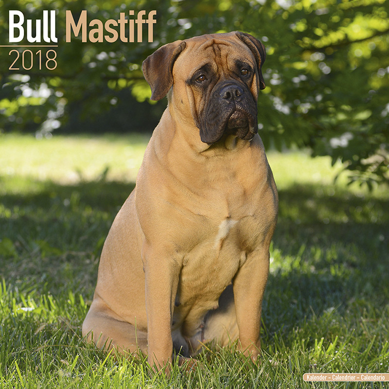

Bullmastiff
The Bullmastiff shares the characteristics of molosser dogs, and was originally developed by 19th-century gamekeepers to guard estates. The breed's bloodlines are drawn from the English Mastiff and the extinct Old English Bulldog.
- Scientific Name: Bullmastiff
- Average Length: 25–27 inches
- Average Lifespan: 8 - 10 Years
- Habitat: Western Europe
The Bullmastiff is a large-sized breed of domestic dog, with a solid build and a short muzzle. Bullmastiffs are strong, powerful, but sensitive dogs. For a Bullmastiff to become a well-behaved family member, consistency is needed. Training and socialization is of high importance, as the breed can be independent.